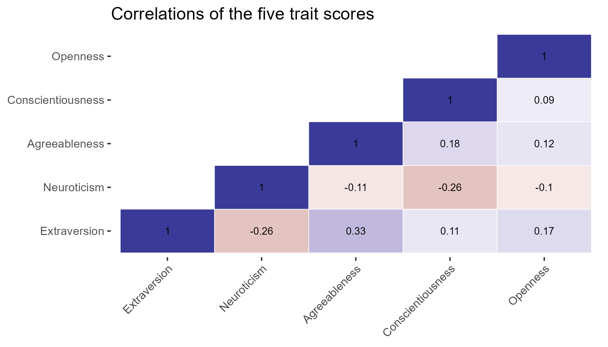
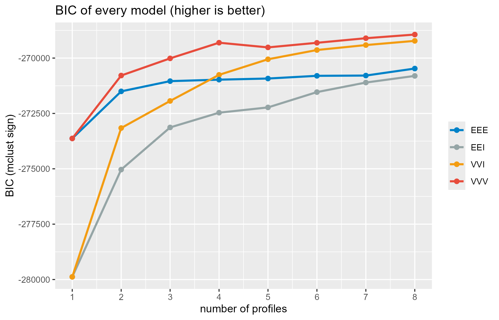
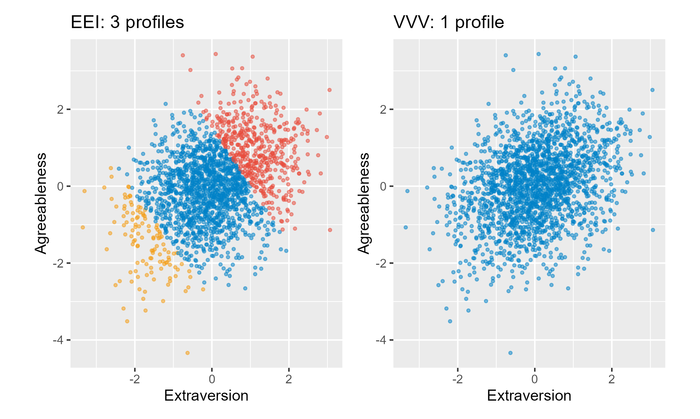
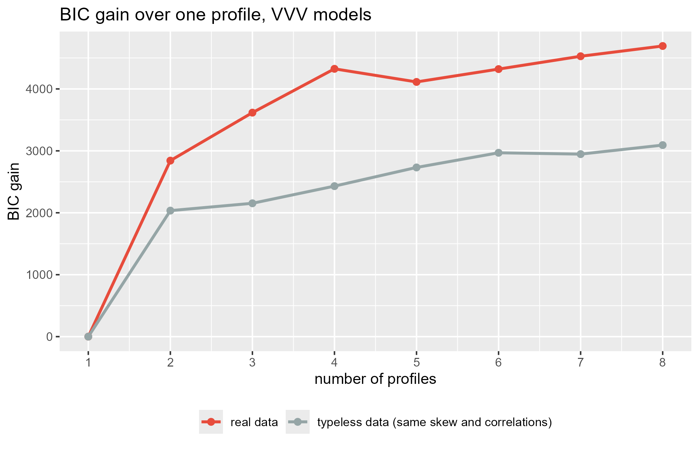
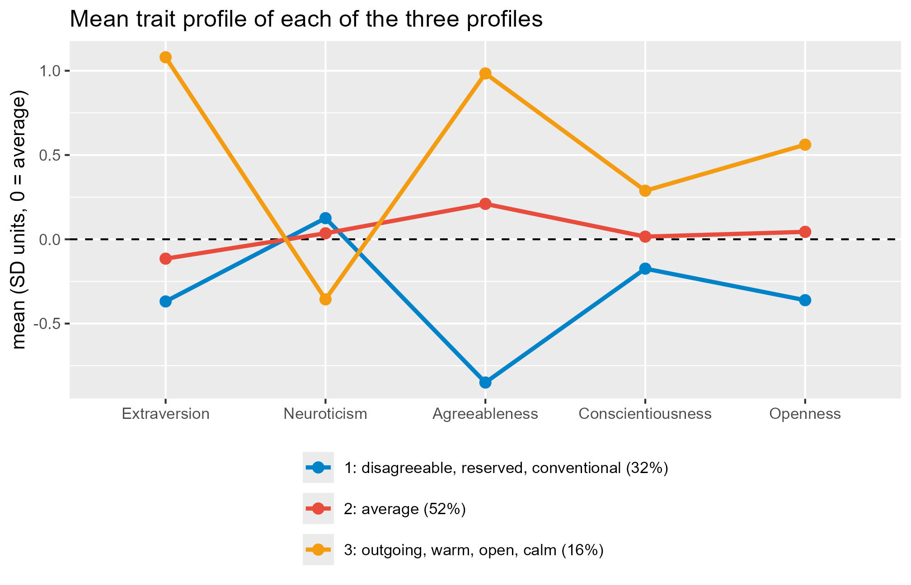
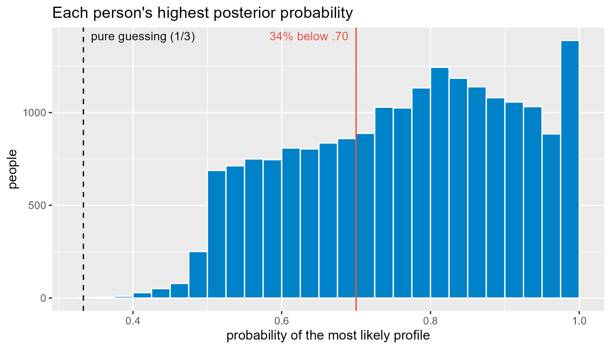

Code
library(mclust) # Gaussian mixture models: latent profile analysis
library(ggplot2)
library(patchwork) # put plots side by sideThe Big Five describe personality with five dimensions: everybody has a score on extraversion, neuroticism, agreeableness, conscientiousness and openness, and the scores vary smoothly from low to high. A second tradition looks for types: groups of people who share a whole pattern of traits.
The dimensional approach is variable-centred: it asks how traits relate to each other and to outcomes. The typological approach is person-centred: it asks which kinds of people there are. Latent profile analysis (LPA) is the usual tool of the second. It assumes the population is a mixture of a few hidden subgroups, each with its own average trait profile, and estimates how many there are, what they look like and who belongs where.
This tutorial runs an LPA on the Big Five scores of almost 20,000 people, and shows step by step how easy it is to find profiles, and how hard it is to show that they are real.
The data are the online answers to the 50 items of the IPIP Big Five markers, described and validated on the IPIP-50 / OCEAN Validation and OCEAN pages. Each item is answered from 1 (disagree) to 5 (agree), with 0 for a missed item. We drop people with missed items, reverse the negatively keyed items (\(6 - x\), so 1 becomes 5), and average the ten items of each trait:
load("data/df_ocean.rda")
items <- c(paste0("E", 1:10), paste0("N", 1:10), paste0("A", 1:10), paste0("C", 1:10), paste0("O", 1:10))
reverse_items <- c("E2", "E4", "E6", "E8", "E10", "N2", "N4", "A1", "A3", "A5", "A7",
"C2", "C4", "C6", "C8", "O2", "O4", "O6")
d <- df_ocean[rowSums(df_ocean[, items] == 0) == 0, ] # complete answers only
for (v in reverse_items) d[[v]] <- 6 - d[[v]] # reverse keying: 1 <-> 5, 2 <-> 4
traits <- c(E = "Extraversion", N = "Neuroticism", A = "Agreeableness", C = "Conscientiousness", O = "Openness")
scores <- sapply(names(traits), function(t) rowMeans(d[, paste0(t, 1:10)])) # mean of the 10 items, 1 to 5
z <- scale(scores) # standardised: mean 0, SD 1
c(people = nrow(z), dropped = nrow(df_ocean) - nrow(z)) people dropped
19718 1 The traits are standardised, so a profile mean of +0.5 means half a standard deviation above the average respondent. Two features of the scores matter later: the traits are correlated, and some are skewed. The correlation plot is drawn with plot_corrplot() of the rwf package, and the skewness with its compute_skewness():

E N A C O
-0.04 -0.08 -0.76 -0.09 -0.47 Extraversion goes with agreeableness (r = 0.33) and against neuroticism (r = -0.26). Agreeableness (-0.76) and openness (-0.47) are skewed to the left: most people describe themselves as agreeable and open, and a long tail does not.
LPA assumes that each person belongs to one of \(K\) hidden profiles. Within profile \(k\), the five scores \(\mathbf{x}\) follow a multivariate normal distribution with mean vector \(\boldsymbol{\mu}_k\) (the profile’s average pattern) and covariance matrix \(\boldsymbol{\Sigma}_k\) (how much people within the profile differ, and how their traits go together). In the population, the scores then follow a mixture:
\[f(\mathbf{x}) = \sum_{k=1}^{K} \pi_k \, \phi(\mathbf{x};\, \boldsymbol{\mu}_k, \boldsymbol{\Sigma}_k)\]
Nobody’s profile is observed. The model gives each person a posterior probability of belonging to each profile, from Bayes’ rule:
\[\tau_{ik} = P(\text{person } i \text{ in profile } k \mid \mathbf{x}_i) = \frac{\pi_k \, \phi(\mathbf{x}_i;\, \boldsymbol{\mu}_k, \boldsymbol{\Sigma}_k)}{\sum_{j=1}^{K} \pi_j \, \phi(\mathbf{x}_i;\, \boldsymbol{\mu}_j, \boldsymbol{\Sigma}_j)}\]
The EM algorithm estimates everything by alternating two steps: compute the \(\tau_{ik}\) from the current parameters (E step), then re-estimate \(\pi_k\), \(\boldsymbol{\mu}_k\) and \(\boldsymbol{\Sigma}_k\) as averages weighted by the \(\tau_{ik}\) (M step), until nothing changes. EM finds a local maximum of the likelihood, so different starting points can end in different solutions (section 6).
The covariance matrices \(\boldsymbol{\Sigma}_k\) are where the models differ. mclust names them with three letters (volume, shape, orientation; E = equal across profiles, V = varying, I = aligned with the axes). The four that matter for LPA:
| mclust | Covariances within a profile | Same in every profile? | Free parameters for 5 traits and \(K\) profiles |
|---|---|---|---|
EEI |
Variances only, traits uncorrelated within a profile | Yes | \(5K + 5 + (K - 1)\) |
VVI |
Variances only, traits uncorrelated within a profile | No | \(10K + (K - 1)\) |
EEE |
Full covariance matrix: traits may correlate | Yes | \(5K + 15 + (K - 1)\) |
VVV |
Full covariance matrix | No | \(20K + (K - 1)\) |
The classic LPA, the default of most software, is EEI: the traits are assumed to be locally independent, uncorrelated within each profile, so every correlation between traits in the whole sample must come from differences between the profiles. Section 4 shows why this assumption is dangerous for personality data.
k-means also splits people into groups, but it is a limiting case of the simplest mixture: equal, spherical clusters, and every person assigned with certainty to the nearest centre. It has no probabilities, no likelihood and no fit indices, so it cannot say how many groups there are or how sure an assignment is. LPA can, at least in principle.
We fit the four models with 1 to 8 profiles. mclust starts EM from a hierarchical clustering of a random subset of 2,000 people (with more than 2,000 people), so we set a seed to make the result reproducible:
Bayesian Information Criterion (BIC):
EEI VVI EEE VVV
1 -279880.2 -279880.2 -273630.2 -273630.2
2 -275035.0 -273158.9 -271502.6 -270787.9
3 -273131.7 -271936.0 -271041.3 -270013.2
4 -272466.3 -270757.9 -270974.7 -269305.6
5 -272228.0 -270053.8 -270923.1 -269517.2
6 -271536.4 -269635.9 -270801.0 -269309.8
7 -271104.7 -269411.9 -270789.3 -269102.6
8 -270804.8 -269222.9 -270472.6 -268937.1
Top 3 models based on the BIC criterion:
VVV,8 VVV,7 VVI,8
-268937.1 -269102.6 -269222.9 mclust defines it as \(\text{BIC} = 2 \log L - p \log n\), where \(\log L\) is the log-likelihood, \(p\) the number of free parameters and \(n\) the number of people. This is the usual BIC with the sign flipped: higher is better in mclust. A difference of 10 or more is usually read as strong evidence.EEI and VVI are the same model (one diagonal covariance matrix), and so are EEE and VVV.Top 3 models lists the three best cells.bic_long <- function(b) {
m <- unclass(b)[, , drop = FALSE]
data.frame(G = rep(as.integer(rownames(m)), ncol(m)), model = rep(colnames(m), each = nrow(m)),
BIC = as.vector(m))
}
model_colours <- c(EEI = "#95A5A6", VVI = "#f39c12", EEE = "#0082c8", VVV = "#E74C3C")
bl <- bic_long(bic)
ggplot(bl, aes(G, BIC, colour = model)) +
geom_line(linewidth = 1) +
geom_point(size = 2) +
scale_colour_manual(values = model_colours) +
scale_x_continuous(breaks = 1:8) +
labs(title = "BIC of every model (higher is better)", x = "number of profiles", y = "BIC (mclust sign)",
colour = NULL)
EEI VVI EEE VVV
8 8 8 8 Two things stand out:
VVV), and probably more if we allowed more.EEE, VVV) start far above the diagonal ones: with one profile the difference is 6,250 BIC points. The correlations between the traits are a large part of the structure of these data.Both observations are warnings. The next two sections explain them.
A diagonal model must explain every correlation between traits with differences between profiles. If the traits are correlated, it can only do this by adding profiles, even when the population contains no subgroups at all.
Simulate 2,000 people from one normal distribution with the correlation of extraversion and agreeableness in our data. There are no types in these data by construction. Fit the diagonal model EEI and the correlated model VVV, and let BIC choose the number of profiles for each:
set.seed(5)
r_ea <- cor(scores[, "E"], scores[, "A"])
two <- MASS::mvrnorm(2000, mu = c(0, 0), Sigma = matrix(c(1, r_ea, r_ea, 1), 2))
colnames(two) <- c("Extraversion", "Agreeableness")
set.seed(6)
b2 <- mclustBIC(two, G = 1:6, modelNames = c("EEI", "VVV"))
fit_eei <- Mclust(two, modelNames = "EEI", x = b2) # best number of profiles under EEI
fit_vvv <- Mclust(two, modelNames = "VVV", x = b2) # ... and under VVV
c(EEI_profiles = fit_eei$G, VVV_profiles = fit_vvv$G)EEI_profiles VVV_profiles
3 1 panel <- function(fit, title) {
ggplot(data.frame(two, profile = factor(fit$classification)), aes(Extraversion, Agreeableness, colour = profile)) +
geom_point(size = 0.8, alpha = 0.5) +
scale_colour_manual(values = c("#0082c8", "#E74C3C", "#f39c12", "black", "#8E44AD", "#95A5A6")) +
coord_equal() +
labs(title = title) +
theme(legend.position = "none") # the colours are the profiles of each panel
}
panel(fit_eei, sprintf("EEI: %d profiles", fit_eei$G)) +
panel(fit_vvv, sprintf("VVV: %d profile%s", fit_vvv$G, ifelse(fit_vvv$G == 1, "", "s")))
The diagonal model cuts the tilted cloud into 3 slices along its long axis, because within each slice the correlation is smaller. The correlated model sees one cloud.
The same experiment with all five traits: one normal distribution with exactly the correlations of our data, and as many people (19,718):
EEI VVI VVV
8 8 1 In data with no types at all, the classic LPA would report 8 profiles with EEI and 8 with VVI, as many as we allowed. Only the correlated model gets it right, with 1. Profiles found by a diagonal model in correlated data can be nothing more than slices of one correlated cloud. From now on we use models that allow the traits to correlate within a profile.
With correlated models, BIC still preferred 8 profiles in section 3. Two more checks.
BIC rewards every improvement in fit that is large enough for the sample size, and with almost 20,000 people even a small departure from a single normal distribution is “large enough”. The same analysis on a random 4,000 people:
profiles_with_4000_people profiles_with_all
5 8 The “number of profiles” depends on how many people we asked. That is what we would expect if BIC were measuring how far the data are from normal, not how many types there are.
The ICL (integrated completed likelihood; Biernacki et al., 2000) is BIC with a penalty for unclear classification: it subtracts twice the entropy of the posterior probabilities, \(\text{ICL} = \text{BIC} - 2\,\text{EN}\), with \(\text{EN} = -\sum_i \sum_k \tau_{ik} \log \tau_{ik}\) (in mclust with the hard assignments in place of \(\tau_{ik}\) in the logarithm). Profiles that overlap a lot have a high entropy, so ICL prefers fewer, clearly separated groups. We refit the VVV models from the same start as the BIC table and collect their fit statistics:
entropy_rel <- function(tau) { # relative entropy: 1 = perfect classification, 0 = none
if (ncol(tau) == 1) return(NA)
tau <- pmax(tau, 1e-300)
1 - sum(-tau * log(tau)) / (nrow(tau) * log(ncol(tau)))
}
vvv_fits <- lapply(1:8, function(k) Mclust(z, G = k, modelNames = "VVV", x = bic))
fit_table <- data.frame(
profiles = 1:8,
logLik = sapply(vvv_fits, function(f) f$loglik),
parameters = sapply(vvv_fits, function(f) f$df),
BIC = sapply(vvv_fits, function(f) f$bic),
ICL = sapply(vvv_fits, icl),
entropy = sapply(vvv_fits, function(f) entropy_rel(f$z)),
smallest = sapply(vvv_fits, function(f) min(f$parameters$pro)))
format(fit_table, digits = 3, big.mark = ",") profiles logLik parameters BIC ICL entropy smallest
1 1 -136,716 20 -273,630 -273,630 NA 1.0000
2 2 -135,191 41 -270,788 -279,446 0.426 0.4693
3 3 -134,700 62 -270,013 -282,669 0.466 0.1830
4 4 -134,242 83 -269,306 -284,103 0.510 0.1374
5 5 -134,244 104 -269,517 -287,112 0.487 0.1353
6 6 -134,037 125 -269,310 -288,652 0.495 0.1165
7 7 -133,829 146 -269,103 -289,306 0.518 0.0716
8 8 -133,643 167 -268,937 -290,373 0.520 0.0522BIC keeps adding profiles, but is that because there are types, or because the scores are skewed and a single normal distribution cannot fit them? Mixtures are flexible: a sum of normal distributions can imitate any smooth non-normal shape, so skewed data alone can produce “profiles” (Bauer & Curran, 2003). To check, we build data with no types but with the same skewed distribution of every trait and the same correlations. We simulate correlated normal scores and push each through the real distribution of that trait (a Gaussian copula: the same idea Gerlach et al., 2018, used to compare their types with a typeless baseline):
normal_scores <- apply(scores, 2, function(x) qnorm((rank(x) - 0.5) / length(x))) # the traits as normal scores
set.seed(31)
g <- MASS::mvrnorm(nrow(scores), mu = rep(0, 5), Sigma = cor(normal_scores))
typeless <- sapply(1:5, function(j) quantile(scores[, j], pnorm(g[, j]), type = 1, names = FALSE))
colnames(typeless) <- names(traits)
round(rbind(skew_real = sapply(as.data.frame(scores), compute_skewness),
skew_typeless = sapply(as.data.frame(typeless), compute_skewness)), 2) E N A C O
skew_real -0.04 -0.08 -0.76 -0.09 -0.47
skew_typeless -0.03 -0.08 -0.74 -0.08 -0.47[1] 0.02123984 data profiles_chosen_by_BIC BIC_gain_1_to_best
1 real 8 4693
2 typeless, same skew and correlations 8 3093ggplot(rbind(data.frame(G = 1:8, gain = real_vvv - real_vvv[1], data = "real data"),
data.frame(G = 1:8, gain = null_vvv - null_vvv[1], data = "typeless data (same skew and correlations)")),
aes(G, gain, colour = data)) +
geom_line(linewidth = 1) + geom_point(size = 2) +
scale_colour_manual(values = c("#E74C3C", "#95A5A6")) +
scale_x_continuous(breaks = 1:8) +
labs(title = "BIC gain over one profile, VVV models", x = "number of profiles", y = "BIC gain", colour = NULL) +
theme(legend.position = "bottom")
In data that have no types, BIC also climbs all the way to 8 profiles. Rising BIC is therefore no evidence of types here: the skew of the traits is enough to produce it. The real data gain somewhat more (4,693 against 3,093 BIC points), so they are not just a skewed version of one smooth cloud: something else departs from it, for example response styles such as agreeing with everything. Whether that something is a set of personality types is a different question, which BIC cannot answer.
The classic typology has three types, so let us look at three profiles, as a typical study would. Because EM can stop at a local maximum, good practice is to run it from many random starts and keep the solution with the highest log-likelihood. We use 10 starts, each beginning from a hierarchical clustering of a different random 500 people:
random_start <- function(data, seed, G = 3) {
set.seed(seed)
Mclust(data, G = G, modelNames = "VVV", verbose = FALSE,
initialization = list(subset = sample(nrow(data), 500))) # start from 500 random people
}
starts <- lapply(1:10, function(s) random_start(z, seed = 100 + s))
loglik <- sapply(starts, function(f) f$loglik)
best3 <- starts[[which.max(loglik)]]
data.frame(start = 1:10, logLik = round(loglik, 1),
ARI_with_best = round(sapply(starts, function(f) adjustedRandIndex(f$classification, best3$classification)), 2)) start logLik ARI_with_best
1 1 -134698.8 0.23
2 2 -134893.3 0.26
3 3 -134682.1 0.29
4 4 -134693.3 0.27
5 5 -134654.9 1.00
6 6 -134718.9 0.15
7 7 -134715.1 0.16
8 8 -134689.3 0.25
9 9 -134688.4 0.26
10 10 -134728.9 0.14The adjusted Rand index (ARI; Hubert & Arabie, 1985) compares two classifications of the same people: 1 means identical groups (whatever their numbering), 0 means no more agreement than chance. Only one start found the best solution. The others stopped at log-likelihoods only 27 to 238 points lower, with groups that agree with it poorly (ARI from 0.14 to 0.29). The likelihood surface is flat: many quite different ways of cutting the data into three fit almost equally well. We describe the best:
words <- list(E = c("outgoing", "reserved"), N = c("anxious", "calm"), A = c("warm", "disagreeable"),
C = c("organised", "disorganised"), O = c("open", "conventional"))
describe <- function(m) { # name a profile by its traits at least 0.3 SD from the mean
big <- m[abs(m) >= 0.3]
if (!length(big)) return("average")
big <- big[order(-abs(big))]
paste(mapply(function(t, v) words[[t]][ifelse(v > 0, 1, 2)], names(big), big), collapse = ", ")
}
means3 <- t(best3$parameters$mean) # one row per profile
rownames(means3) <- NULL
labels3 <- sapply(seq_len(nrow(means3)), function(k) describe(means3[k, ]))
pro3 <- best3$parameters$pro
names3 <- sprintf("%d: %s (%.0f%%)", seq_along(pro3), labels3, 100 * pro3)
round(data.frame(means3, share = pro3, row.names = names3), 2) E N A C O share
1: disagreeable, reserved, conventional (32%) -0.37 0.13 -0.85 -0.17 -0.36 0.32
2: average (52%) -0.11 0.04 0.21 0.02 0.04 0.52
3: outgoing, warm, open, calm (16%) 1.08 -0.36 0.98 0.29 0.56 0.16profile_long <- data.frame(profile = factor(rep(names3, 5), levels = names3),
trait = factor(rep(traits, each = 3), levels = traits),
mean = as.vector(means3))
ggplot(profile_long, aes(trait, mean, colour = profile, group = profile)) +
geom_hline(yintercept = 0, linetype = "dashed") +
geom_line(linewidth = 1.1) + geom_point(size = 2.5) +
scale_colour_manual(values = c("#0082c8", "#E74C3C", "#f39c12")) +
labs(title = "Mean trait profile of each of the three profiles", x = NULL,
y = "mean (SD units, 0 = average)", colour = NULL) +
guides(colour = guide_legend(ncol = 1)) +
theme(legend.position = "bottom")
How sure is the assignment of each person?
relative_entropy mean_probability_profile_1 mean_probability_profile_2 mean_probability_profile_3 share_below_0.7
0.52 0.80 0.75 0.77 0.34 ggplot(data.frame(max_tau), aes(max_tau)) +
geom_histogram(binwidth = 0.025, boundary = 1, fill = "#0082c8", colour = "white") +
geom_vline(xintercept = 1 / 3, linetype = "dashed") +
annotate("text", x = 1 / 3 + 0.01, y = Inf, label = "pure guessing (1/3)", hjust = 0, vjust = 1.5, size = 3.5) +
geom_vline(xintercept = 0.7, colour = "#E74C3C") +
annotate("text", x = 0.69, y = Inf, label = sprintf("%.0f%% below .70", 100 * mean(max_tau < 0.7)),
hjust = 1, vjust = 1.5, size = 3.5, colour = "#E74C3C") +
labs(title = "Each person's highest posterior probability", x = "probability of the most likely profile",
y = "people")
The profiles are averages of heavily overlapping groups. How do they compare with the classic types?
Real types should come back when we repeat the analysis on other people. We split the sample into two random halves, fit three VVV profiles in each (best of 5 starts), classify everybody with each half’s model, and compare the two classifications:
best_of <- function(data, starts = 5, seed = 1) { # the best of several random starts
fits <- lapply(seq_len(starts), function(s) random_start(data, seed = seed + s))
fits[[which.max(sapply(fits, function(f) f$loglik))]]
}
set.seed(41)
half <- sample(rep(1:2, length.out = nrow(z)))
fit_a <- best_of(z[half == 1, ], seed = 200)
fit_b <- best_of(z[half == 2, ], seed = 300)
class_a <- predict(fit_a, z)$classification
class_b <- predict(fit_b, z)$classification
ari_halves <- adjustedRandIndex(class_a, class_b)
ari_halves[1] 0.3085761 half profile E N A C O share
1 A 1 -0.3154 0.135 -0.78 -0.156 -0.33 0.37
2 A 2 -0.0975 0.034 0.32 0.065 0.03 0.50
3 A 3 1.1882 -0.484 0.86 0.242 0.80 0.13
4 B 1 0.2588 -0.196 0.44 0.275 -0.20 0.45
5 B 2 -0.0034 0.242 0.24 -0.275 0.82 0.26
6 B 3 -0.3658 0.077 -0.82 -0.202 -0.41 0.29The two halves agree with an ARI of only 0.31: the same people end up in quite different groups depending on which half of the sample defined the profiles. The table shows why (the numbering of the profiles is arbitrary). In words:
Both halves find a disagreeable, reserved and conventional profile and a large, mildly warm one, but the third differs: a small resilient-like profile in half A, an open one in half B. The sizes differ too, and with them the membership of many people.
E N A C O
1 -0.37 0.25 -0.24 -0.19 -1.16
2 -0.55 0.53 -0.53 -0.46 0.57
3 0.69 -0.59 0.58 0.49 0.38ARI_kmeans_vs_LPA
0.08842201 k-means, with its round, equal clusters, cuts the data in yet another way (ARI with the LPA solution 0.09): conventional, reserved (29%); open, reserved, disagreeable, anxious, disorganised (31%); outgoing, calm, warm, organised, open (40%). One cluster looks like the resilient type, and another combines the anxiety and introversion of the overcontrolled type with the low agreeableness and conscientiousness of the undercontrolled type. That may look like the classic typology, but k-means always returns exactly the number of clusters it is asked for, with roughly equal sizes, whether or not the data contain groups: three slices of one round cloud would look much the same.
Once the profiles exist, studies usually compare them on other variables. The simplest way assigns every person to their most likely profile (modal assignment) and compares the groups. With unclear classification this attenuates the differences, because many people are counted in the wrong profile. Weighting every person by their posterior probabilities instead keeps the uncertainty visible, but it attenuates the differences too (Bolck et al., 2004). Only three-step methods that correct for the classification error (Vermunt, 2010; Bakk et al., 2013) remove the bias; they are available in dedicated latent class software, not in mclust.
ok <- d$age >= 13 & d$age <= 80 & d$gender %in% 1:2 # plausible ages; 1 = male, 2 = female
female <- d$gender[ok] == 2
age <- d$age[ok]
tau_ok <- tau[ok, ]
round(rbind(
women_modal = tapply(female, assigned[ok], mean),
women_weighted = colSums(tau_ok * female) / colSums(tau_ok),
age_modal = tapply(age, assigned[ok], mean),
age_weighted = colSums(tau_ok * age) / colSums(tau_ok)), 2) 1 2 3
women_modal 0.52 0.62 0.72
women_weighted 0.55 0.62 0.71
age_modal 24.19 26.22 29.65
age_weighted 24.62 26.30 29.37With either method the profiles differ in their share of women (from 52% to 72% with modal assignment) and in mean age, and the weighted differences are, if anything, slightly smaller, as the attenuation argument predicts. The differences between the latent profiles themselves are probably larger than both estimates. But there is a simpler question behind the comparison: are the traits related to age and gender? The variable-centred answer needs no profiles at all:
E N A C O
r_with_age 0.10 -0.16 0.16 0.21 0.08
r_with_female 0.05 0.17 0.21 0.03 -0.10These correlations use all the information in the scores, with no classification error to correct.
Put together, the evidence from these data:
| Check | Result | Expected if there were types |
|---|---|---|
| BIC | Rises to 8 profiles for every model | Peaks at a small number |
| BIC in typeless data with the same skew and correlations | Also rises to 8 | Stays at 1 |
| Diagonal models in one normal cloud | 8 “profiles” | 1 |
| ICL | 1 profile | The number of types |
| Relative entropy, 3 profiles | 0.52 | Above .80 |
| Random starts | Best solution found by 1 of 10 | Found by most starts |
| Split halves (ARI) | 0.31 | Close to 1 |
The profiles that LPA finds here are ways of cutting a continuous, skewed and correlated cloud of people into regions, not groups that exist apart from the method. This matches the debate around the four types of Gerlach et al. (2018), which other researchers could not reproduce robustly (Freudenstein et al., 2019).
That does not make LPA useless. It is the right tool when there is reason to expect qualitatively different groups, and the checks above are how to find out whether they are there. Profiles can also be a convenient description (“about a quarter of the sample combines high extraversion with high agreeableness”), as long as the report says that they summarise a continuum. For predicting outcomes, the five continuous scores keep more information than any profile membership.
A report of an LPA (APA 7th edition) should say which models were compared and how the number of profiles was chosen, and give a fit table, the entropy, the class sizes and the profile means. With these data, an honest report states that no number of profiles was clearly supported. The numbers come from the R objects:
Method (data analysis):
Latent profile analyses of the five standardised trait scores (N = 19,718) were run with Gaussian mixture models in R (Version 4.6.2; R Core Team, 2026) with the mclust package (Version 6.1.4; Scrucca et al., 2016). We compared models with uncorrelated traits within profiles (equal or varying variances) and with correlated traits (equal or varying covariance matrices), each with one to eight profiles, using the BIC, the ICL and the relative entropy. Because the traits were correlated and skewed, we compared the results with simulated data that had the same correlations and the same distribution of every trait but no subgroups. The three-profile solution was the best of 10 random starts, and its stability was examined in two random halves of the sample.
Results:
The BIC increased with every additional profile for all models, up to the maximum of eight, and it did so also in the simulated data without subgroups. The ICL favoured a single profile, ICL = 273,630, against 279,446 for two profiles (lower is better). A three-profile model with correlated traits classified people poorly (relative entropy = .52; 34% of respondents had no profile probability of at least .70), different random starts converged on different solutions, and the profiles did not replicate across random halves of the sample (adjusted Rand index = .31). We therefore found no support for distinct personality types in these data (Table 1).
Table 1
Fit of Latent Profile Models With Correlated Traits and Varying Covariance Matrices
| Profiles | Log-likelihood | p | BIC | ICL | Entropy | Smallest profile |
|---|---|---|---|---|---|---|
| 1 | -136,716 | 20 | 273,630 | 273,630 | 100.0% | |
| 2 | -135,191 | 41 | 270,788 | 279,446 | .43 | 46.9% |
| 3 | -134,700 | 62 | 270,013 | 282,669 | .47 | 18.3% |
| 4 | -134,242 | 83 | 269,306 | 284,103 | .51 | 13.7% |
| 5 | -134,244 | 104 | 269,517 | 287,112 | .49 | 13.5% |
| 6 | -134,037 | 125 | 269,310 | 288,652 | .49 | 11.6% |
| 7 | -133,829 | 146 | 269,103 | 289,306 | .52 | 7.2% |
| 8 | -133,643 | 167 | 268,937 | 290,373 | .52 | 5.2% |
Note. N = 19,718. p = number of free parameters. BIC and ICL are given in the usual convention, where lower is better (mclust reports them with the opposite sign). Entropy is the relative entropy of the posterior probabilities. All rows come from the same starting values; the three-profile solution described in the text is the best of 10 random starts.
Points to remember:
citation() and citation("mclust") in R give the exact references.| What LPA does | Models the population as a mixture of \(K\) normal distributions (profiles), each with its own mean and covariance matrix; gives every person a probability of belonging to each profile |
| Covariance models | EEI/VVI: traits uncorrelated within profiles (classic LPA); EEE/VVV: correlated. Diagonal models invent profiles when traits are correlated |
| Choosing \(K\) | BIC (in mclust, higher is better), ICL, relative entropy, smallest class size, interpretability, and theory; with large samples BIC alone keeps adding profiles |
| Classification quality | Relative entropy and average posterior probabilities; above .80 for confident assignment |
| Local maxima | Run EM from many random starts and keep the best log-likelihood; check that it is found repeatedly |
| Before calling them types | Compare with a typeless null model (same correlations and skew), replicate in another sample, and check that the classification is clear |
| Covariates | Modal assignment attenuates differences; weight by posterior probabilities, or use three-step methods |
| R | mclustBIC(x, G = 1:8, modelNames = c("EEI", "VVI", "EEE", "VVV")), Mclust(), icl(), adjustedRandIndex(), predict() |
| Here | No support for personality types in 19,718 sets of Big Five scores: the profiles behave like cuts through a continuum |
Asendorpf, J. B., Borkenau, P., Ostendorf, F., & van Aken, M. A. G. (2001). Carving personality description at its joints: Confirmation of three replicable personality prototypes for both children and adults. European Journal of Personality, 15(3), 169–198.
Bakk, Z., Tekle, F. B., & Vermunt, J. K. (2013). Estimating the association between latent class membership and external variables using bias-adjusted three-step approaches. Sociological Methodology, 43(1), 272–311.
Bauer, D. J., & Curran, P. J. (2003). Distributional assumptions of growth mixture models: Implications for overextraction of latent trajectory classes. Psychological Methods, 8(3), 338–363.
Biernacki, C., Celeux, G., & Govaert, G. (2000). Assessing a mixture model for clustering with the integrated completed likelihood. IEEE Transactions on Pattern Analysis and Machine Intelligence, 22(7), 719–725.
Bolck, A., Croon, M., & Hagenaars, J. (2004). Estimating latent structure models with categorical variables: One-step versus three-step estimators. Political Analysis, 12(1), 3–27.
Freudenstein, J.-P., Strauch, C., Mussel, P., & Ziegler, M. (2019). Four personality types may be neither robust nor exhaustive. Nature Human Behaviour, 3(10), 1045–1046.
Gerlach, M., Farb, B., Revelle, W., & Nunes Amaral, L. A. (2018). A robust data-driven approach identifies four personality types across four large data sets. Nature Human Behaviour, 2(10), 735–742.
Goldberg, L. R. (1992). The development of markers for the Big-Five factor structure. Psychological Assessment, 4(1), 26–42.
Hubert, L., & Arabie, P. (1985). Comparing partitions. Journal of Classification, 2(1), 193–218.
Robins, R. W., John, O. P., Caspi, A., Moffitt, T. E., & Stouthamer-Loeber, M. (1996). Resilient, overcontrolled, and undercontrolled boys: Three replicable personality types. Journal of Personality and Social Psychology, 70(1), 157–171.
Scrucca, L., Fop, M., Murphy, T. B., & Raftery, A. E. (2016). mclust 5: Clustering, classification and density estimation using Gaussian finite mixture models. The R Journal, 8(1), 289–317.
Spurk, D., Hirschi, A., Wang, M., Valero, D., & Kauffeld, S. (2020). Latent profile analysis: A review and “how to” guide of its application within vocational behavior research. Journal of Vocational Behavior, 120, 103445.
Vermunt, J. K. (2010). Latent class modeling with covariates: Two improved three-step approaches. Political Analysis, 18(4), 450–469.
compute_skewness() and plot_corrplot() on this page---
title: "Latent Profile Analysis: Are There Personality Types?"
description: "Latent profile analysis of Big Five scores in R with mclust: model choice, BIC and ICL, entropy, stability, null models, and whether personality types exist."
author: ""
---
```{r options, echo=FALSE, warning=FALSE, message=FALSE}
directory<-if (rstudioapi::isAvailable()) paste0(dirname(rstudioapi::getActiveDocumentContext()$path),"/") else ""
source(paste0(directory, "R/code_options.R"))
source(paste0(directory, "R/code_rwf.R"))
# wider, shorter figures than the site default; no knitr cache: the fits depend on the seeds set in the chunks
knitr::opts_chunk$set(fig.height = 4.5, cache = FALSE)
```
## The question: types or dimensions?
The Big Five describe personality with five **dimensions**: everybody has a score on extraversion, neuroticism, agreeableness, conscientiousness and openness, and the scores vary smoothly from low to high. A second tradition looks for **types**: groups of people who share a whole pattern of traits.
- Robins et al. (1996) and Asendorpf et al. (2001) described three replicable types: **resilient** (calm, sociable, agreeable, conscientious, open), **overcontrolled** (anxious and introverted) and **undercontrolled** (low agreeableness and low conscientiousness).
- Gerlach et al. (2018), with more than a million online respondents, reported four types: **average**, **reserved**, **self-centred** and **role model**.
The dimensional approach is **variable-centred**: it asks how traits relate to each other and to outcomes. The typological approach is **person-centred**: it asks which kinds of people there are. **Latent profile analysis** (LPA) is the usual tool of the second. It assumes the population is a mixture of a few hidden subgroups, each with its own average trait profile, and estimates how many there are, what they look like and who belongs where.
This tutorial runs an LPA on the Big Five scores of almost 20,000 people, and shows step by step how easy it is to find profiles, and how hard it is to show that they are real.
```{r packages}
library(mclust) # Gaussian mixture models: latent profile analysis
library(ggplot2)
library(patchwork) # put plots side by side
```
---
## 1. The data and the five trait scores
The data are the online answers to the 50 items of the IPIP Big Five markers, described and validated on the [IPIP-50 / OCEAN Validation](VALIDATION_OCEAN.rmd) and [OCEAN](VALIDATION_DESCRIPTIVES_OCEAN.rmd) pages. Each item is answered from 1 (disagree) to 5 (agree), with 0 for a missed item. We drop people with missed items, reverse the negatively keyed items ($6 - x$, so 1 becomes 5), and average the ten items of each trait:
```{r data}
load("data/df_ocean.rda")
items <- c(paste0("E", 1:10), paste0("N", 1:10), paste0("A", 1:10), paste0("C", 1:10), paste0("O", 1:10))
reverse_items <- c("E2", "E4", "E6", "E8", "E10", "N2", "N4", "A1", "A3", "A5", "A7",
"C2", "C4", "C6", "C8", "O2", "O4", "O6")
d <- df_ocean[rowSums(df_ocean[, items] == 0) == 0, ] # complete answers only
for (v in reverse_items) d[[v]] <- 6 - d[[v]] # reverse keying: 1 <-> 5, 2 <-> 4
traits <- c(E = "Extraversion", N = "Neuroticism", A = "Agreeableness", C = "Conscientiousness", O = "Openness")
scores <- sapply(names(traits), function(t) rowMeans(d[, paste0(t, 1:10)])) # mean of the 10 items, 1 to 5
z <- scale(scores) # standardised: mean 0, SD 1
c(people = nrow(z), dropped = nrow(df_ocean) - nrow(z))
```
The traits are standardised, so a profile mean of +0.5 means half a standard deviation above the average respondent. Two features of the scores matter later: the traits are **correlated**, and some are **skewed**. The correlation plot is drawn with `plot_corrplot()` of the rwf package, and the skewness with its `compute_skewness()`:
```{r correlations, fig.height = 4}
r <- cor(scores)
dimnames(r) <- list(traits, traits)
plot_corrplot(r, title = "Correlations of the five trait scores", base_size = 12)
round(sapply(as.data.frame(scores), compute_skewness), 2)
```
Extraversion goes with agreeableness (*r* = `r sprintf("%.2f", cor(scores)[1, 3])`) and against neuroticism (*r* = `r sprintf("%.2f", cor(scores)[1, 2])`). Agreeableness (`r sprintf("%.2f", compute_skewness(scores[, "A"]))`) and openness (`r sprintf("%.2f", compute_skewness(scores[, "O"]))`) are skewed to the left: most people describe themselves as agreeable and open, and a long tail does not.
---
## 2. What latent profile analysis is
### A mixture of normal distributions
LPA assumes that each person belongs to one of $K$ hidden profiles. Within profile $k$, the five scores $\mathbf{x}$ follow a multivariate normal distribution with mean vector $\boldsymbol{\mu}_k$ (the profile's average pattern) and covariance matrix $\boldsymbol{\Sigma}_k$ (how much people within the profile differ, and how their traits go together). In the population, the scores then follow a **mixture**:
$$f(\mathbf{x}) = \sum_{k=1}^{K} \pi_k \, \phi(\mathbf{x};\, \boldsymbol{\mu}_k, \boldsymbol{\Sigma}_k)$$
- $\pi_k$ is the share of the population in profile $k$ (the **class proportions**, summing to 1);
- $\phi$ is the density of the multivariate normal distribution.
Nobody's profile is observed. The model gives each person a **posterior probability** of belonging to each profile, from Bayes' rule:
$$\tau_{ik} = P(\text{person } i \text{ in profile } k \mid \mathbf{x}_i) = \frac{\pi_k \, \phi(\mathbf{x}_i;\, \boldsymbol{\mu}_k, \boldsymbol{\Sigma}_k)}{\sum_{j=1}^{K} \pi_j \, \phi(\mathbf{x}_i;\, \boldsymbol{\mu}_j, \boldsymbol{\Sigma}_j)}$$
The **EM algorithm** estimates everything by alternating two steps: compute the $\tau_{ik}$ from the current parameters (E step), then re-estimate $\pi_k$, $\boldsymbol{\mu}_k$ and $\boldsymbol{\Sigma}_k$ as averages weighted by the $\tau_{ik}$ (M step), until nothing changes. EM finds a **local** maximum of the likelihood, so different starting points can end in different solutions (section 6).
### Which covariance matrices?
The covariance matrices $\boldsymbol{\Sigma}_k$ are where the models differ. `mclust` names them with three letters (volume, shape, orientation; E = equal across profiles, V = varying, I = aligned with the axes). The four that matter for LPA:
| mclust | Covariances within a profile | Same in every profile? | Free parameters for 5 traits and $K$ profiles |
|---|---|---|---|
| `EEI` | Variances only, traits **uncorrelated** within a profile | Yes | $5K + 5 + (K - 1)$ |
| `VVI` | Variances only, traits uncorrelated within a profile | No | $10K + (K - 1)$ |
| `EEE` | Full covariance matrix: traits may **correlate** | Yes | $5K + 15 + (K - 1)$ |
| `VVV` | Full covariance matrix | No | $20K + (K - 1)$ |
The **classic LPA**, the default of most software, is `EEI`: the traits are assumed to be **locally independent**, uncorrelated within each profile, so every correlation between traits in the whole sample must come from differences between the profiles. Section 4 shows why this assumption is dangerous for personality data.
### LPA and k-means
k-means also splits people into groups, but it is a limiting case of the simplest mixture: equal, spherical clusters, and every person assigned with certainty to the nearest centre. It has no probabilities, no likelihood and no fit indices, so it cannot say how many groups there are or how sure an assignment is. LPA can, at least in principle.
---
## 3. A first try: fit everything and let BIC choose
We fit the four models with 1 to 8 profiles. `mclust` starts EM from a hierarchical clustering of a **random subset** of 2,000 people (with more than 2,000 people), so we set a seed to make the result reproducible:
```{r fit_all}
models <- c("EEI", "VVI", "EEE", "VVV")
set.seed(2026)
bic <- mclustBIC(z, G = 1:8, modelNames = models)
bic
```
### How to read the output
- Each cell is the **BIC** of one model with one number of profiles. `mclust` defines it as $\text{BIC} = 2 \log L - p \log n$, where $\log L$ is the log-likelihood, $p$ the number of free parameters and $n$ the number of people. This is the usual BIC with the sign flipped: **higher is better** in `mclust`. A difference of 10 or more is usually read as strong evidence.
- With 1 profile, `EEI` and `VVI` are the same model (one diagonal covariance matrix), and so are `EEE` and `VVV`.
- `Top 3 models` lists the three best cells.
```{r bic_plot}
bic_long <- function(b) {
m <- unclass(b)[, , drop = FALSE]
data.frame(G = rep(as.integer(rownames(m)), ncol(m)), model = rep(colnames(m), each = nrow(m)),
BIC = as.vector(m))
}
model_colours <- c(EEI = "#95A5A6", VVI = "#f39c12", EEE = "#0082c8", VVV = "#E74C3C")
bl <- bic_long(bic)
ggplot(bl, aes(G, BIC, colour = model)) +
geom_line(linewidth = 1) +
geom_point(size = 2) +
scale_colour_manual(values = model_colours) +
scale_x_continuous(breaks = 1:8) +
labs(title = "BIC of every model (higher is better)", x = "number of profiles", y = "BIC (mclust sign)",
colour = NULL)
best_G <- sapply(models, function(m) unname(which.max(bic[, m]))) # the best number of profiles per model
best_G
```
Two things stand out:
- **BIC keeps rising** for every model: whatever the covariance structure, adding a profile improves the fit, up to 8 (`r paste(names(best_G), best_G, sep = ": ", collapse = ", ")`). If we followed BIC blindly, we would report `r best_G["VVV"]` profiles (`VVV`), and probably more if we allowed more.
- The models with correlated traits (`EEE`, `VVV`) start far above the diagonal ones: with one profile the difference is `r format(round(bic[1, "VVV"] - bic[1, "EEI"]), big.mark = ",")` BIC points. The correlations between the traits are a large part of the structure of these data.
Both observations are warnings. The next two sections explain them.
---
## 4. The pitfall: diagonal models invent profiles
A diagonal model must explain every correlation between traits with differences between profiles. If the traits are correlated, it can only do this by adding profiles, even when the population contains no subgroups at all.
### In two dimensions
Simulate 2,000 people from **one** normal distribution with the correlation of extraversion and agreeableness in our data. There are no types in these data by construction. Fit the diagonal model `EEI` and the correlated model `VVV`, and let BIC choose the number of profiles for each:
```{r two_d, fig.height = 4.2}
set.seed(5)
r_ea <- cor(scores[, "E"], scores[, "A"])
two <- MASS::mvrnorm(2000, mu = c(0, 0), Sigma = matrix(c(1, r_ea, r_ea, 1), 2))
colnames(two) <- c("Extraversion", "Agreeableness")
set.seed(6)
b2 <- mclustBIC(two, G = 1:6, modelNames = c("EEI", "VVV"))
fit_eei <- Mclust(two, modelNames = "EEI", x = b2) # best number of profiles under EEI
fit_vvv <- Mclust(two, modelNames = "VVV", x = b2) # ... and under VVV
c(EEI_profiles = fit_eei$G, VVV_profiles = fit_vvv$G)
panel <- function(fit, title) {
ggplot(data.frame(two, profile = factor(fit$classification)), aes(Extraversion, Agreeableness, colour = profile)) +
geom_point(size = 0.8, alpha = 0.5) +
scale_colour_manual(values = c("#0082c8", "#E74C3C", "#f39c12", "black", "#8E44AD", "#95A5A6")) +
coord_equal() +
labs(title = title) +
theme(legend.position = "none") # the colours are the profiles of each panel
}
panel(fit_eei, sprintf("EEI: %d profiles", fit_eei$G)) +
panel(fit_vvv, sprintf("VVV: %d profile%s", fit_vvv$G, ifelse(fit_vvv$G == 1, "", "s")))
```
The diagonal model cuts the tilted cloud into `r fit_eei$G` slices along its long axis, because within each slice the correlation is smaller. The correlated model sees one cloud.
### In five dimensions, with our sample size
The same experiment with all five traits: one normal distribution with exactly the correlations of our data, and as many people (`r format(nrow(z), big.mark = ",")`):
```{r null_mvn}
set.seed(11)
mvn <- scale(MASS::mvrnorm(nrow(z), mu = rep(0, 5), Sigma = cor(z)))
set.seed(12)
b_mvn <- mclustBIC(mvn, G = 1:8, modelNames = c("EEI", "VVI", "VVV"))
sapply(c("EEI", "VVI", "VVV"), function(m) unname(which.max(b_mvn[, m]))) # profiles chosen by BIC
```
In data with **no types at all**, the classic LPA would report `r which.max(b_mvn[, "EEI"])` profiles with `EEI` and `r which.max(b_mvn[, "VVI"])` with `VVI`, as many as we allowed. Only the correlated model gets it right, with `r which.max(b_mvn[, "VVV"])`. Profiles found by a diagonal model in correlated data can be nothing more than slices of one correlated cloud. From now on we use models that allow the traits to correlate within a profile.
---
## 5. Allowing correlations: does the evidence for profiles survive?
With correlated models, BIC still preferred 8 profiles in section 3. Two more checks.
### BIC and sample size
BIC rewards every improvement in fit that is large enough for the sample size, and with almost 20,000 people even a small departure from a single normal distribution is "large enough". The same analysis on a random 4,000 people:
```{r subsample}
set.seed(21)
sub <- z[sample(nrow(z), 4000), ]
set.seed(22)
b_sub <- mclustBIC(sub, G = 1:8, modelNames = "VVV")
c(profiles_with_4000_people = unname(which.max(b_sub[, "VVV"])), profiles_with_all = unname(best_G["VVV"]))
```
The "number of profiles" depends on how many people we asked. That is what we would expect if BIC were measuring how far the data are from normal, not how many types there are.
### ICL: are the profiles well separated?
The **ICL** (integrated completed likelihood; Biernacki et al., 2000) is BIC with a penalty for unclear classification: it subtracts twice the entropy of the posterior probabilities, $\text{ICL} = \text{BIC} - 2\,\text{EN}$, with $\text{EN} = -\sum_i \sum_k \tau_{ik} \log \tau_{ik}$ (in `mclust` with the hard assignments in place of $\tau_{ik}$ in the logarithm). Profiles that overlap a lot have a high entropy, so ICL prefers fewer, clearly separated groups. We refit the `VVV` models from the same start as the BIC table and collect their fit statistics:
```{r icl}
entropy_rel <- function(tau) { # relative entropy: 1 = perfect classification, 0 = none
if (ncol(tau) == 1) return(NA)
tau <- pmax(tau, 1e-300)
1 - sum(-tau * log(tau)) / (nrow(tau) * log(ncol(tau)))
}
vvv_fits <- lapply(1:8, function(k) Mclust(z, G = k, modelNames = "VVV", x = bic))
fit_table <- data.frame(
profiles = 1:8,
logLik = sapply(vvv_fits, function(f) f$loglik),
parameters = sapply(vvv_fits, function(f) f$df),
BIC = sapply(vvv_fits, function(f) f$bic),
ICL = sapply(vvv_fits, icl),
entropy = sapply(vvv_fits, function(f) entropy_rel(f$z)),
smallest = sapply(vvv_fits, function(f) min(f$parameters$pro)))
format(fit_table, digits = 3, big.mark = ",")
```
- **ICL is highest with 1 profile.** As soon as the population is split, the classification becomes so unclear that the gain in fit does not pay for it.
- The log-likelihood **falls** from 4 to 5 profiles (`r fmt_ll <- function(x) format(round(x), big.mark = ","); fmt_ll(fit_table$logLik[4])` against `r fmt_ll(fit_table$logLik[5])`), although a model with an extra profile can always fit at least as well. EM stopped at a local maximum: section 6 deals with this.
- **Relative entropy**, $1 - \text{EN} / (n \log K)$, is between `r sprintf("%.2f", min(fit_table$entropy, na.rm = TRUE))` and `r sprintf("%.2f", max(fit_table$entropy, na.rm = TRUE))`. A common rule asks for at least .80 before people can be assigned to profiles with confidence; values around .4 mean that most people sit between profiles.
### A null model that keeps the skew
BIC keeps adding profiles, but is that because there are types, or because the scores are skewed and a single normal distribution cannot fit them? Mixtures are flexible: a sum of normal distributions can imitate any smooth non-normal shape, so skewed data alone can produce "profiles" (Bauer & Curran, 2003). To check, we build data with **no types** but with the same skewed distribution of every trait and the same correlations. We simulate correlated normal scores and push each through the real distribution of that trait (a Gaussian copula: the same idea Gerlach et al., 2018, used to compare their types with a typeless baseline):
```{r null_copula}
normal_scores <- apply(scores, 2, function(x) qnorm((rank(x) - 0.5) / length(x))) # the traits as normal scores
set.seed(31)
g <- MASS::mvrnorm(nrow(scores), mu = rep(0, 5), Sigma = cor(normal_scores))
typeless <- sapply(1:5, function(j) quantile(scores[, j], pnorm(g[, j]), type = 1, names = FALSE))
colnames(typeless) <- names(traits)
round(rbind(skew_real = sapply(as.data.frame(scores), compute_skewness),
skew_typeless = sapply(as.data.frame(typeless), compute_skewness)), 2)
max(abs(cor(typeless) - cor(scores))) # largest difference between the two correlation matrices
set.seed(32)
b_typeless <- mclustBIC(scale(typeless), G = 1:8, modelNames = "VVV")
```
```{r null_compare}
real_vvv <- bic[, "VVV"]
null_vvv <- b_typeless[, "VVV"]
data.frame(data = c("real", "typeless, same skew and correlations"),
profiles_chosen_by_BIC = unname(c(which.max(real_vvv), which.max(null_vvv))),
BIC_gain_1_to_best = round(c(max(real_vvv) - real_vvv[1], max(null_vvv) - null_vvv[1])))
ggplot(rbind(data.frame(G = 1:8, gain = real_vvv - real_vvv[1], data = "real data"),
data.frame(G = 1:8, gain = null_vvv - null_vvv[1], data = "typeless data (same skew and correlations)")),
aes(G, gain, colour = data)) +
geom_line(linewidth = 1) + geom_point(size = 2) +
scale_colour_manual(values = c("#E74C3C", "#95A5A6")) +
scale_x_continuous(breaks = 1:8) +
labs(title = "BIC gain over one profile, VVV models", x = "number of profiles", y = "BIC gain", colour = NULL) +
theme(legend.position = "bottom")
```
In data that have no types, BIC also climbs all the way to `r which.max(null_vvv)` profiles. Rising BIC is therefore no evidence of types here: the skew of the traits is enough to produce it. The real data gain somewhat more (`r format(round(max(real_vvv) - real_vvv[1]), big.mark = ",")` against `r format(round(max(null_vvv) - null_vvv[1]), big.mark = ",")` BIC points), so they are not just a skewed version of one smooth cloud: something else departs from it, for example response styles such as agreeing with everything. Whether that something is a set of personality types is a different question, which BIC cannot answer.
---
## 6. Looking at a three-profile solution
The classic typology has three types, so let us look at three profiles, as a typical study would. Because EM can stop at a local maximum, good practice is to run it from many random starts and keep the solution with the highest log-likelihood. We use 10 starts, each beginning from a hierarchical clustering of a different random 500 people:
```{r starts}
random_start <- function(data, seed, G = 3) {
set.seed(seed)
Mclust(data, G = G, modelNames = "VVV", verbose = FALSE,
initialization = list(subset = sample(nrow(data), 500))) # start from 500 random people
}
starts <- lapply(1:10, function(s) random_start(z, seed = 100 + s))
loglik <- sapply(starts, function(f) f$loglik)
best3 <- starts[[which.max(loglik)]]
data.frame(start = 1:10, logLik = round(loglik, 1),
ARI_with_best = round(sapply(starts, function(f) adjustedRandIndex(f$classification, best3$classification)), 2))
```
The **adjusted Rand index** (ARI; Hubert & Arabie, 1985) compares two classifications of the same people: 1 means identical groups (whatever their numbering), 0 means no more agreement than chance. `r ari_best <- sapply(starts, function(f) adjustedRandIndex(f$classification, best3$classification)); n_best <- sum(ari_best > 0.95); if (n_best == 1) "Only one start" else paste(n_best, "of the 10 starts")` found the best solution. The others stopped at log-likelihoods only `r sprintf("%.0f", min(max(loglik) - loglik[ari_best <= 0.95]))` to `r sprintf("%.0f", max(max(loglik) - loglik[ari_best <= 0.95]))` points lower, with groups that agree with it poorly (ARI from `r sprintf("%.2f", min(ari_best))` to `r sprintf("%.2f", max(ari_best[ari_best <= 0.95]))`). The likelihood surface is flat: many quite different ways of cutting the data into three fit almost equally well. We describe the best:
```{r profile_plot}
words <- list(E = c("outgoing", "reserved"), N = c("anxious", "calm"), A = c("warm", "disagreeable"),
C = c("organised", "disorganised"), O = c("open", "conventional"))
describe <- function(m) { # name a profile by its traits at least 0.3 SD from the mean
big <- m[abs(m) >= 0.3]
if (!length(big)) return("average")
big <- big[order(-abs(big))]
paste(mapply(function(t, v) words[[t]][ifelse(v > 0, 1, 2)], names(big), big), collapse = ", ")
}
means3 <- t(best3$parameters$mean) # one row per profile
rownames(means3) <- NULL
labels3 <- sapply(seq_len(nrow(means3)), function(k) describe(means3[k, ]))
pro3 <- best3$parameters$pro
names3 <- sprintf("%d: %s (%.0f%%)", seq_along(pro3), labels3, 100 * pro3)
round(data.frame(means3, share = pro3, row.names = names3), 2)
profile_long <- data.frame(profile = factor(rep(names3, 5), levels = names3),
trait = factor(rep(traits, each = 3), levels = traits),
mean = as.vector(means3))
ggplot(profile_long, aes(trait, mean, colour = profile, group = profile)) +
geom_hline(yintercept = 0, linetype = "dashed") +
geom_line(linewidth = 1.1) + geom_point(size = 2.5) +
scale_colour_manual(values = c("#0082c8", "#E74C3C", "#f39c12")) +
labs(title = "Mean trait profile of each of the three profiles", x = NULL,
y = "mean (SD units, 0 = average)", colour = NULL) +
guides(colour = guide_legend(ncol = 1)) +
theme(legend.position = "bottom")
```
How sure is the assignment of each person?
```{r uncertainty, fig.height = 4}
tau <- best3$z
assigned <- best3$classification
max_tau <- apply(tau, 1, max)
round(c(relative_entropy = entropy_rel(tau),
sapply(1:3, function(k) setNames(mean(tau[assigned == k, k]), paste0("mean_probability_profile_", k))),
share_below_0.7 = mean(max_tau < 0.7)), 2)
ggplot(data.frame(max_tau), aes(max_tau)) +
geom_histogram(binwidth = 0.025, boundary = 1, fill = "#0082c8", colour = "white") +
geom_vline(xintercept = 1 / 3, linetype = "dashed") +
annotate("text", x = 1 / 3 + 0.01, y = Inf, label = "pure guessing (1/3)", hjust = 0, vjust = 1.5, size = 3.5) +
geom_vline(xintercept = 0.7, colour = "#E74C3C") +
annotate("text", x = 0.69, y = Inf, label = sprintf("%.0f%% below .70", 100 * mean(max_tau < 0.7)),
hjust = 1, vjust = 1.5, size = 3.5, colour = "#E74C3C") +
labs(title = "Each person's highest posterior probability", x = "probability of the most likely profile",
y = "people")
```
- **Relative entropy** is `r sprintf("%.2f", entropy_rel(tau))`, far below the usual .80.
- The **average posterior probability** of the people assigned to each profile (`r paste(sprintf("%.2f", sapply(1:3, function(k) mean(tau[assigned == k, k]))), collapse = ", ")`) only just reaches the .70 to .80 usually asked for: the average hides many people near the boundaries.
- **`r sprintf("%.0f", 100 * mean(max_tau < 0.7))`%** of the people have no profile with a probability of at least .70.
The profiles are averages of heavily overlapping groups. How do they compare with the classic types?
```{r compare_types, echo=FALSE}
resilient <- which.max(means3[, "E"] + means3[, "A"] - means3[, "N"]) # the most resilient-looking profile
average <- which.min(rowSums(abs(means3))) # the profile closest to the mean
other <- setdiff(1:3, c(resilient, average))
```
- Profile `r resilient` (`r sprintf("%.0f", 100 * pro3[resilient])`%) is **resilient-like**: `r labels3[resilient]`. It is the clearest profile, but also the smallest.
- Profile `r average` (`r sprintf("%.0f", 100 * pro3[average])`%) is close to **average** on every trait, like the "average" type of Gerlach et al. (2018). A profile that sits in the middle of the cloud is what a mixture model needs to fit the dense centre of a continuous distribution.
- Profile `r other` (`r sprintf("%.0f", 100 * pro3[other])`%) is `r labels3[other]`. Its low agreeableness recalls the undercontrolled type, but its conscientiousness is only `r sprintf("%.2f", abs(means3[other, "C"]))` SD below average.
- There is **no overcontrolled** profile, anxious and introverted.
---
## 7. Is the solution stable?
Real types should come back when we repeat the analysis on other people. We split the sample into two random halves, fit three `VVV` profiles in each (best of 5 starts), classify **everybody** with each half's model, and compare the two classifications:
```{r split_half}
best_of <- function(data, starts = 5, seed = 1) { # the best of several random starts
fits <- lapply(seq_len(starts), function(s) random_start(data, seed = seed + s))
fits[[which.max(sapply(fits, function(f) f$loglik))]]
}
set.seed(41)
half <- sample(rep(1:2, length.out = nrow(z)))
fit_a <- best_of(z[half == 1, ], seed = 200)
fit_b <- best_of(z[half == 2, ], seed = 300)
class_a <- predict(fit_a, z)$classification
class_b <- predict(fit_b, z)$classification
ari_halves <- adjustedRandIndex(class_a, class_b)
ari_halves
halves <- data.frame(half = rep(c("A", "B"), each = 3), profile = rep(1:3, 2),
rbind(t(fit_a$parameters$mean), t(fit_b$parameters$mean)),
share = c(fit_a$parameters$pro, fit_b$parameters$pro))
format(halves, digits = 2)
```
The two halves agree with an ARI of only `r sprintf("%.2f", ari_halves)`: the same people end up in quite different groups depending on which half of the sample defined the profiles. The table shows why (the numbering of the profiles is arbitrary). In words:
- half A: `r paste(sprintf("%s (%.0f%%)", apply(t(fit_a$parameters$mean), 1, describe), 100 * fit_a$parameters$pro), collapse = "; ")`;
- half B: `r paste(sprintf("%s (%.0f%%)", apply(t(fit_b$parameters$mean), 1, describe), 100 * fit_b$parameters$pro), collapse = "; ")`.
Both halves find a disagreeable, reserved and conventional profile and a large, mildly warm one, but the third differs: a small resilient-like profile in half A, an open one in half B. The sizes differ too, and with them the membership of many people.
### And k-means?
```{r kmeans}
set.seed(51)
km <- kmeans(z, centers = 3, nstart = 25, iter.max = 100, algorithm = "Lloyd")
round(km$centers, 2)
c(ARI_kmeans_vs_LPA = adjustedRandIndex(km$cluster, best3$classification))
```
k-means, with its round, equal clusters, cuts the data in yet another way (ARI with the LPA solution `r sprintf("%.2f", adjustedRandIndex(km$cluster, best3$classification))`): `r paste(sprintf("%s (%.0f%%)", apply(km$centers, 1, describe), 100 * km$size / sum(km$size)), collapse = "; ")`. One cluster looks like the resilient type, and another combines the anxiety and introversion of the overcontrolled type with the low agreeableness and conscientiousness of the undercontrolled type. That may look like the classic typology, but k-means always returns exactly the number of clusters it is asked for, with roughly equal sizes, whether or not the data contain groups: three slices of one round cloud would look much the same.
---
## 8. Profiles, age and gender, carefully
Once the profiles exist, studies usually compare them on other variables. The simplest way assigns every person to their most likely profile (**modal assignment**) and compares the groups. With unclear classification this **attenuates** the differences, because many people are counted in the wrong profile. Weighting every person by their posterior probabilities instead keeps the uncertainty visible, but it attenuates the differences too (Bolck et al., 2004). Only **three-step** methods that correct for the classification error (Vermunt, 2010; Bakk et al., 2013) remove the bias; they are available in dedicated latent class software, not in `mclust`.
```{r covariates}
ok <- d$age >= 13 & d$age <= 80 & d$gender %in% 1:2 # plausible ages; 1 = male, 2 = female
female <- d$gender[ok] == 2
age <- d$age[ok]
tau_ok <- tau[ok, ]
round(rbind(
women_modal = tapply(female, assigned[ok], mean),
women_weighted = colSums(tau_ok * female) / colSums(tau_ok),
age_modal = tapply(age, assigned[ok], mean),
age_weighted = colSums(tau_ok * age) / colSums(tau_ok)), 2)
```
With either method the profiles differ in their share of women (from `r sprintf("%.0f", 100 * min(tapply(female, assigned[ok], mean)))`% to `r sprintf("%.0f", 100 * max(tapply(female, assigned[ok], mean)))`% with modal assignment) and in mean age, and the weighted differences are, if anything, slightly smaller, as the attenuation argument predicts. The differences between the latent profiles themselves are probably larger than both estimates. But there is a simpler question behind the comparison: are the traits related to age and gender? The variable-centred answer needs no profiles at all:
```{r variable_centred}
round(rbind(r_with_age = cor(z[ok, ], age)[, 1], r_with_female = cor(z[ok, ], female)[, 1]), 2)
```
These correlations use all the information in the scores, with no classification error to correct.
---
## 9. Types or dimensions?
Put together, the evidence from these data:
| Check | Result | Expected if there were types |
|---|---|---|
| BIC | Rises to 8 profiles for every model | Peaks at a small number |
| BIC in typeless data with the same skew and correlations | Also rises to `r which.max(null_vvv)` | Stays at 1 |
| Diagonal models in one normal cloud | `r max(which.max(b_mvn[, "EEI"]), which.max(b_mvn[, "VVI"]))` "profiles" | 1 |
| ICL | 1 profile | The number of types |
| Relative entropy, 3 profiles | `r sprintf("%.2f", entropy_rel(tau))` | Above .80 |
| Random starts | Best solution found by `r n_best` of 10 | Found by most starts |
| Split halves (ARI) | `r sprintf("%.2f", ari_halves)` | Close to 1 |
The profiles that LPA finds here are ways of cutting a continuous, skewed and correlated cloud of people into regions, not groups that exist apart from the method. This matches the debate around the four types of Gerlach et al. (2018), which other researchers could not reproduce robustly (Freudenstein et al., 2019).
That does not make LPA useless. It is the right tool when there is reason to expect qualitatively different groups, and the checks above are how to find out whether they are there. Profiles can also be a convenient **description** ("about a quarter of the sample combines high extraversion with high agreeableness"), as long as the report says that they summarise a continuum. For predicting outcomes, the five continuous scores keep more information than any profile membership.
---
## 10. Reporting the results in APA style
A report of an LPA (APA 7th edition) should say which models were compared and how the number of profiles was chosen, and give a fit table, the entropy, the class sizes and the profile means. With these data, an honest report states that no number of profiles was clearly supported. The numbers come from the R objects:
```{r apa_numbers}
nz <- function(x, d = 2) sub("^(-?)0", "\\1", formatC(x, format = "f", digits = d)) # no leading zero
fmt <- function(x) format(round(x), big.mark = ",")
```
**Method** (data analysis):
> Latent profile analyses of the five standardised trait scores (*N* = `r fmt(nrow(z))`) were run with Gaussian mixture models in R (Version `r paste(R.version$major, R.version$minor, sep = ".")`; R Core Team, `r R.version$year`) with the *mclust* package (Version `r packageDescription("mclust")[["Version"]]`; Scrucca et al., 2016). We compared models with uncorrelated traits within profiles (equal or varying variances) and with correlated traits (equal or varying covariance matrices), each with one to eight profiles, using the BIC, the ICL and the relative entropy. Because the traits were correlated and skewed, we compared the results with simulated data that had the same correlations and the same distribution of every trait but no subgroups. The three-profile solution was the best of 10 random starts, and its stability was examined in two random halves of the sample.
**Results:**
> The BIC increased with every additional profile for all models, up to the maximum of eight, and it did so also in the simulated data without subgroups. The ICL favoured a single profile, ICL = `r fmt(-fit_table$ICL[1])`, against `r fmt(-fit_table$ICL[2])` for two profiles (lower is better). A three-profile model with correlated traits classified people poorly (relative entropy = `r nz(entropy_rel(tau))`; `r sprintf("%.0f", 100 * mean(max_tau < 0.7))`% of respondents had no profile probability of at least .70), different random starts converged on different solutions, and the profiles did not replicate across random halves of the sample (adjusted Rand index = `r nz(ari_halves)`). We therefore found no support for distinct personality types in these data (Table 1).
**Table 1**
*Fit of Latent Profile Models With Correlated Traits and Varying Covariance Matrices*
```{r apa_table, echo=FALSE}
knitr::kable(
data.frame(Profiles = fit_table$profiles,
LL = fmt(fit_table$logLik),
p = fit_table$parameters,
BIC = fmt(-fit_table$BIC),
ICL = fmt(-fit_table$ICL),
Entropy = ifelse(is.na(fit_table$entropy), "", nz(fit_table$entropy)),
Smallest = sprintf("%.1f%%", 100 * fit_table$smallest)),
col.names = c("Profiles", "Log-likelihood", "*p*", "BIC", "ICL", "Entropy", "Smallest profile"),
align = "rrrrrrr", format = "pipe", row.names = FALSE)
```
*Note.* *N* = `r fmt(nrow(z))`. *p* = number of free parameters. BIC and ICL are given in the usual convention, where lower is better (`mclust` reports them with the opposite sign). Entropy is the relative entropy of the posterior probabilities. All rows come from the same starting values; the three-profile solution described in the text is the best of 10 random starts.
**Points to remember:**
- Report **every** model compared (covariance structures and numbers of profiles), not only the chosen one.
- Give the BIC **and** a measure of classification quality (entropy, ICL, average posterior probabilities), and the size of the smallest profile.
- Say how many random starts were used, and whether the best solution was found more than once.
- Check the solution against a typeless null model and in a second sample or half before calling profiles "types".
- Cite R and the packages; `citation()` and `citation("mclust")` in R give the exact references.
---
## 11. Summary
| | |
|---|---|
| **What LPA does** | Models the population as a mixture of $K$ normal distributions (profiles), each with its own mean and covariance matrix; gives every person a probability of belonging to each profile |
| **Covariance models** | `EEI`/`VVI`: traits uncorrelated within profiles (classic LPA); `EEE`/`VVV`: correlated. Diagonal models invent profiles when traits are correlated |
| **Choosing $K$** | BIC (in `mclust`, higher is better), ICL, relative entropy, smallest class size, interpretability, and theory; with large samples BIC alone keeps adding profiles |
| **Classification quality** | Relative entropy and average posterior probabilities; above .80 for confident assignment |
| **Local maxima** | Run EM from many random starts and keep the best log-likelihood; check that it is found repeatedly |
| **Before calling them types** | Compare with a typeless null model (same correlations and skew), replicate in another sample, and check that the classification is clear |
| **Covariates** | Modal assignment attenuates differences; weight by posterior probabilities, or use three-step methods |
| **R** | `mclustBIC(x, G = 1:8, modelNames = c("EEI", "VVI", "EEE", "VVV"))`, `Mclust()`, `icl()`, `adjustedRandIndex()`, `predict()` |
| **Here** | No support for personality types in 19,718 sets of Big Five scores: the profiles behave like cuts through a continuum |
---
## References
Asendorpf, J. B., Borkenau, P., Ostendorf, F., & van Aken, M. A. G. (2001). Carving personality description at its joints: Confirmation of three replicable personality prototypes for both children and adults. *European Journal of Personality*, *15*(3), 169–198.
Bakk, Z., Tekle, F. B., & Vermunt, J. K. (2013). Estimating the association between latent class membership and external variables using bias-adjusted three-step approaches. *Sociological Methodology*, *43*(1), 272–311.
Bauer, D. J., & Curran, P. J. (2003). Distributional assumptions of growth mixture models: Implications for overextraction of latent trajectory classes. *Psychological Methods*, *8*(3), 338–363.
Biernacki, C., Celeux, G., & Govaert, G. (2000). Assessing a mixture model for clustering with the integrated completed likelihood. *IEEE Transactions on Pattern Analysis and Machine Intelligence*, *22*(7), 719–725.
Bolck, A., Croon, M., & Hagenaars, J. (2004). Estimating latent structure models with categorical variables: One-step versus three-step estimators. *Political Analysis*, *12*(1), 3–27.
Freudenstein, J.-P., Strauch, C., Mussel, P., & Ziegler, M. (2019). Four personality types may be neither robust nor exhaustive. *Nature Human Behaviour*, *3*(10), 1045–1046.
Gerlach, M., Farb, B., Revelle, W., & Nunes Amaral, L. A. (2018). A robust data-driven approach identifies four personality types across four large data sets. *Nature Human Behaviour*, *2*(10), 735–742.
Goldberg, L. R. (1992). The development of markers for the Big-Five factor structure. *Psychological Assessment*, *4*(1), 26–42.
Hubert, L., & Arabie, P. (1985). Comparing partitions. *Journal of Classification*, *2*(1), 193–218.
Robins, R. W., John, O. P., Caspi, A., Moffitt, T. E., & Stouthamer-Loeber, M. (1996). Resilient, overcontrolled, and undercontrolled boys: Three replicable personality types. *Journal of Personality and Social Psychology*, *70*(1), 157–171.
Scrucca, L., Fop, M., Murphy, T. B., & Raftery, A. E. (2016). mclust 5: Clustering, classification and density estimation using Gaussian finite mixture models. *The R Journal*, *8*(1), 289–317.
Spurk, D., Hirschi, A., Wang, M., Valero, D., & Kauffeld, S. (2020). Latent profile analysis: A review and "how to" guide of its application within vocational behavior research. *Journal of Vocational Behavior*, *120*, 103445.
Vermunt, J. K. (2010). Latent class modeling with covariates: Two improved three-step approaches. *Political Analysis*, *18*(4), 450–469.